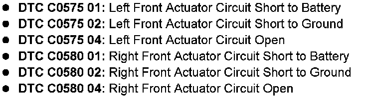
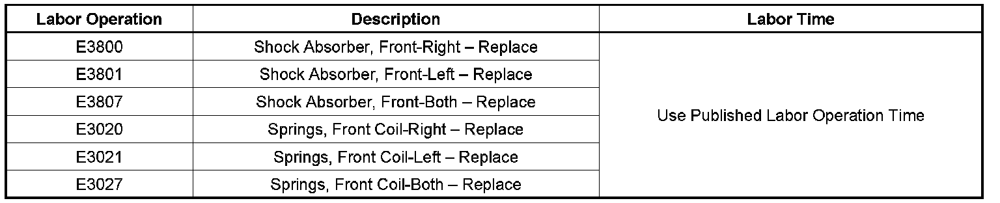

Suspension - Front Shock Absorber Noise/Fluid Leaks
TECHNICALBulletin No.: 08-03-08-002C
Date: September 04, 2008
Subject:
Front Shock Absorber Noise, Leaks, Service Suspension Message Displayed on DIC, DTCs C0575 and/or C0580 Set (Replace Shock Absorbers and Coil Springs, If Necessary)
Models:
2007 Cadillac Escalade, Escalade ESV, Escalade EXT
2007 Chevrolet Avalanche, Suburban, Tahoe
2007 GMC Yukon, Yukon Denali, Yukon XL, Yukon Denali XL
with Real Time Damping Suspension Package (RPO Z55)
Supercede:
This bulletin is being revised to update the Condition section and Parts Information. Please discard Corporate Bulletin Number 08-03-08-002B (Section 03 - Suspension).
Condition

Some customers may comment that a Service Suspension message is displayed in the DIC. In addition, some customers may notice front shock hydraulic leaks and noise when driving over bumps or crests. Typically, a Service Suspension Message will be seen on the DIC with trouble codes of open or short circuit for the specific shock absorber as shown above.
Cause
Road events that cause excessive suspension rebound loads (full travel in extension) may cause deformation to the internal solenoid valve housing. This can result in premature loss of contact between the internal electrical terminals. Additional symptoms can be a loss of damping, shock noise or shock oil fluid leak. In cases where a shock fluid leak is present, the leak may be aggravated by the side load imparted by the front coil spring to the shock sealing system.
Correction
Replace the front shock absorbers. The replacement shock absorbers have a higher strength solenoid valve housing.
Vehicles that exhibit a front shock fluid leak can benefit from the use of side load compensating coil springs. Where appropriate, for 2007 model year vehicles ONLY, spring replacement can be made at the same time when replacing the shock absorber. Refer to Shock Absorber and Spring Assembly Replacement in SI.
Parts Information
Important:
The tag on the old spring may be used to cross reference the new part number.
For part numbers and part information, refer to Group 7.345 for shock absorbers and Group 7.412 for springs in the appropriate parts catalog.
Warranty Information
Important:
Select the appropriate labor operation for the repair performed.

For vehicles repaired under warranty, use the table above.

Disclaimer